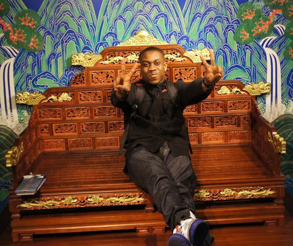
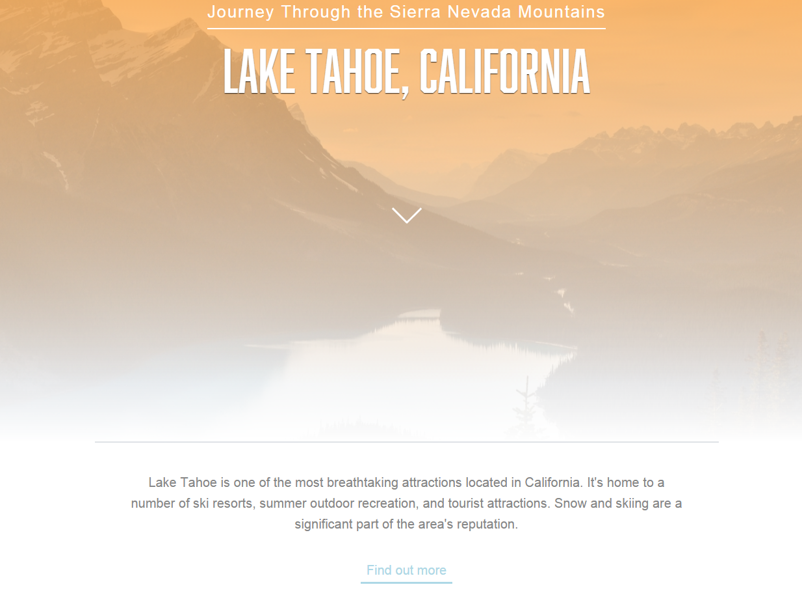
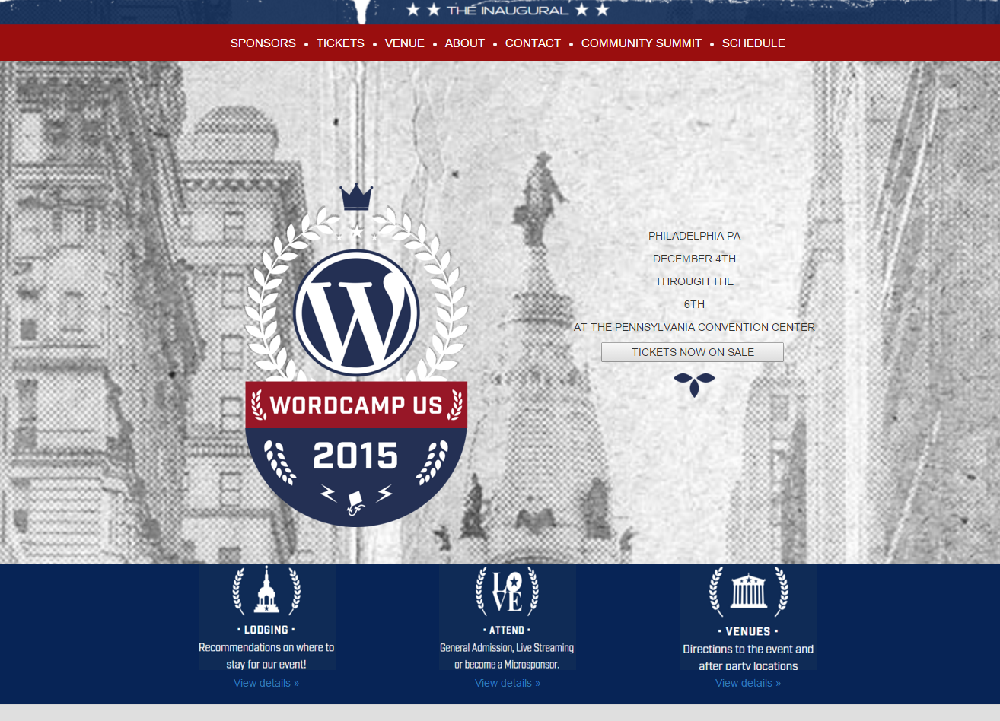
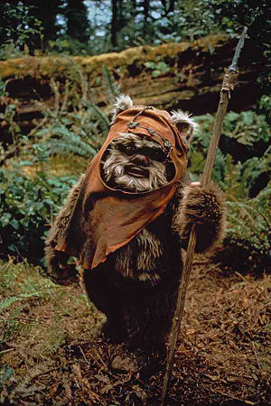
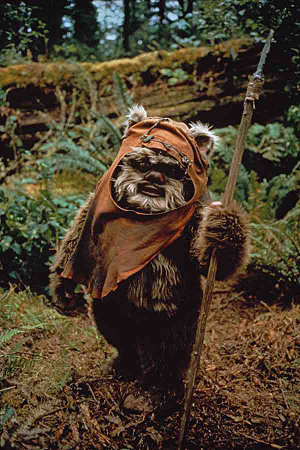

Robert Cox
Web Development Portfolio
Hello! My name is Robert Cox, and I'm a London-based junior Web Developer that has the hope of becoming the best Full Stack developer I can. If I'm not studying hard to advance my web dev skills, I'm working on personal projects in order to turn what I have learnt into working and desirable websites.
I graduated with an Internet and Database Systems MSC (Merit, 2.1). My skills include HTML, CSS, Basic Javascript and Basic PHP.

Projects/Portfolio
Below are some of the samples of projects I have worked on and currently undergoing. I love to work on projects to help increase my knowledge and experience with creating and updating websites.
I am looking forward to working on design-driven projects whether working on the front end, back end or the interactivity of websites. I really have a huge interest in developing sites in the luxury and entertainment sectors.
Lake Tahoe Information MockUp
Wordcount 2015 Website (Copy)

Skills
The merging of design, virtual reality and programming is an interest of mine, and I am keen on working alongside good teams to create high quality websites.
I have an ever evolving range of skills that include front-end development (HTML5, CSS3, Basic Javascript, Responsive Web Development, UX) and back-end development(PHP, SQL, MongoBD
 Bio »
Portfolio »
Work »
I have an ever evolving range of skills that include front-end development (HTML5, CSS3, Basic Javascript, Responsive Web Development, UX) and back-end development(PHP, SQL, MongoBD

Contact Me!
Im available for Junior Front end and Full stack vacancies so get in touch: